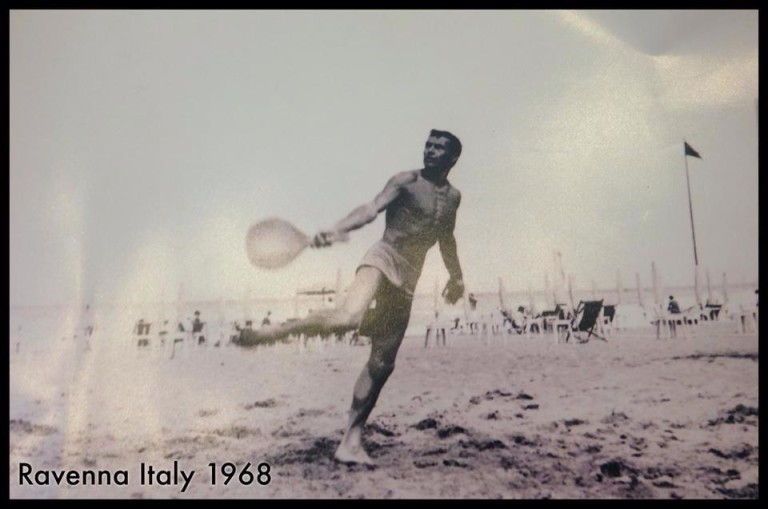

Beach Tennis emerged in Italy in the early 70’s when tennis players on vacation in the coastal town of Ravenna decided to try out tennis with tennis rackets using the existing volleyball nets already installed.
Over the years, the sport spread to the beaches along the coast of Italy and it is estimated that today there are more than 1,600 beach tennis nets along the coast of Italy, and that number does not include the constantly growing number of inland and indoor courts. An estimated 250,000 Italian beach tennis players have made the sport so popular that the infrastructure for tournaments has taken on incredible proportions, check out some of these exotic destinations where beach tennis courts are being set up.
Beach Tennis only started spreading around the world in the early 2000’s but it has quickly gained popularity in coastal areas all around the world. It has been registered that Beach Tennis is being played in over 53 countries all around the world.
The sport is entering its golden age, thanks to the recognition granted to it by the International Tennis Federation, or ITF, in 2010. The ITF now manages the most well-known International ranking for beach tennis. ITF is allocating resources to the development of BT, by setting up exposition sand courts at Pro Tour tournaments in the stadium areas